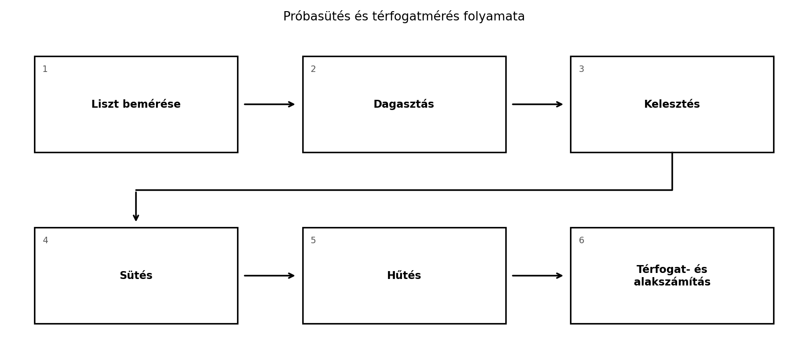

Egy pékségben lisztátvételkor vagy lisztreklamáció esetén gyakran nem elég megnézni a liszt fehérjetartalmát vagy nedvességtartalmát. A péknek azt kell tudnia, hogy az adott lisztből milyen kenyér süthető: mekkora lesz a térfogata, milyen lesz a bélzete, milyen az alakja. Erre szolgál a próbasütés (próbacipó-sütés), amely a liszt sütőipari értékét a gyakorlathoz legközelebb álló módon mutatja meg. Ha a próbacipó lapos, kis térfogatú vagy tömör bélzetű, akkor a liszt minősége, a dagasztás vagy a kelesztés nem megfelelő – ezt a péknek pontosan tudnia kell, mielőtt nagy adag terméket gyárt belőle.
A próbasütés egy egyszerű, ismételhető kísérlet: ugyanabból a lisztből, ugyanazzal a receptúrával, ugyanazon a hőmérsékleten egy kisméretű cipót sütünk, majd megmérjük a kész cipó tömegét, térfogatát, magasságát, átmérőjét és bélzetének rugalmasságát. Az alábbi folyamatábra a fő lépéseket mutatja:

A folyamat végén kapott számok – a fajlagos térfogat, az alaki hányados és a bélzetrugalmasság – összehasonlíthatóvá teszik a különböző liszteket, vagy ugyanannak a lisztnek a minőségváltozását.
Definíció. A próbacipó (próbakenyér, próbatészta) olyan, szabályozott módon készített kisméretű kenyér, amelyet a liszt sütőipari tulajdonságainak vizsgálatára sütnek. A próbacipó receptúrája, dagasztási, kelesztési és sütési paraméterei rögzítettek, hogy az eredmények összehasonlíthatók legyenek.
Definíció. A magkiszorításos térfogatmérés olyan módszer, amellyel szabálytalan alakú, szilárd próbatest (pl. próbacipó) térfogatát úgy határozzuk meg, hogy egy ismert térfogatú edényben a testet apró szemű maggal (pl. repcével vagy mákszemmel) körülvesszük, és a hozzáadott mag térfogatából kiszámítjuk a test térfogatát.
Definíció. A fajlagos térfogat () a próbacipó térfogatának és tömegének hányadosa. Mértékegysége a gyakorlatban vagy :
ahol a próbacipó térfogata, a próbacipó tömege. Minél nagyobb a fajlagos térfogat, annál nagyobb, lazább, levegősebb a cipó azonos tömeg mellett.
Definíció. Az alaki hányados () a próbacipó magasságának és átmérőjének (vagy szélességének) hányadosa. A pontos definíciót a hatályos próbasütési szabvány adja meg; gyakori alakja:
ahol a cipó legnagyobb magassága, a cipó alapjának legnagyobb átmérője vagy szélessége Az alaki hányados pontos irányát és mérési pontjait a módszerszabvány határozza meg (ellenőrizendő: hatályos próbasütési szabvány). A nagyobb alaki hányados magasabb, kerekebb cipót, a kisebb laposabb, szétterülő cipót jelez.
Definíció. A bélzetrugalmasság a kenyérbél azon képessége, hogy összenyomás után mennyire nyeri vissza eredeti alakját. A friss, jó minőségű búzakenyér bélzete rugalmas, a benyomás után gyorsan visszaalakul; az öregedő, hibás, tömör vagy sikérszegény kenyér bélzete plasztikusan deformálódik, a benyomás helye megmarad.
Szabály. A próbasütés eredményeit mindig a próbacipó kihűlése után, szobahőmérsékleten mérjük, mert a meleg kenyér még puhább, nagyobb térfogatúnak mutatkozhat, és a bélzet is képlékenyebb.
Továbbvitt eredmény. A fajlagos térfogat, az alaki hányados és a bélzetrugalmasság fogalmát, valamint a próbasütés értékelését az Érzékszervi vizsgálat és pontozásos minősítés alfejezetben használjuk fel, amikor a késztermék érzékszervi minősítését és a térfogat alapú minőségi besorolást tanuljuk.
A próbacipó készítése szabványos körülmények között történik, hogy az eredmény ne függjön a pék egyéni szokásaitól vagy a napi hőmérséklettől. A következő lépések egy tipikus, tanulási célú próbasütési eljárást mutatnak be; a pontos receptúrát és paramétereket a hatályos sütőipari próbasütési szabvány vagy a gyártmánylap adja meg.
Lisztszükséglet meghatározása. Egy próbasütéshez 1000 g lisztet mérünk be; ebből három azonos, kb. 540 g-os próbacipó készül (párhuzamos minták), hogy a térfogat és a tömeg pontosan mérhető legyen. A lisztet előzetesen szobahőmérsékletre (20–25 °C) temperáljuk, és tömegét 1 g pontossággal bemérjük.
Tésztaösszetétel. A tanulási példában használt élesztőadag 30 g friss élesztő, só 15 g, víz pedig annyi, hogy a tészta a liszt vízfelvevő képességének megfelelően optimális konzisztenciájú legyen (tésztakitermelés, TA). A pontos vízmennyiséget a farinográfos vagy tapasztalati vízfelvevés alapján állapítjuk meg; jellemző tanulási érték 550–600 g víz 1000 g BL 55 liszthez (ellenőrizendő: a liszt vizsgálati eredménye, hatályos próbasütési szabvány). A recept kb. 1600 g tésztát ad; ezt három egyenlő, kb. 540 g-os tésztadarabra osztjuk, és mindegyikből egy próbacipó készül (kész tömege 12% körüli sütési veszteséggel kb. 470 g, tanulási érték).
Dagasztás. A dagasztást kézzel vagy spirálkaros dagasztógéppel végezzük. A cél a jól kialakult, sima felületű, rugalmas tészta. A dagasztási idő a géptől függ, jellemzően 6–10 perc lassú fokozaton, majd 4–6 perc gyors fokozaton (ellenőrizendő: gépadatlap, szabványos eljárás). A dagasztás végén a tésztahőmérséklet 26–28 °C legyen.
Kelesztés. A tésztát letakarva, 30 °C-on, 70–80 % relatív páratartalom mellett kb. 60–90 percig kelesztjük, amíg a térfogata szemmel láthatóan a duplájára nő, és az ujjbenyomás próba szerint a tészta lassan visszaalakul. A kelesztési idő lisztfüggő; a próbasütésnél az időt nem mereven, hanem a megkeltség jelei alapján zárjuk le, de a szabvány rögzítheti azt (ellenőrizendő: hatályos próbasütési szabvány).
Átgyúrás és formázás. A megkelt tésztát kíméletesen átgyúrjuk, hogy a gáz nagyja távozzon, majd cipóformára alakítjuk. A cipót vékonyan lisztezett vagy sütőpapírral bélelt sütőlemezre helyezzük, zárással lefelé.
Végső kelesztés. A formázott cipót 30–35 °C-on, 70–80 % relatív páratartalom mellett kb. 40–60 percig kelesztjük. A próbasütésnél a végső kelesztés végét a tapintásos próba jelzi: ha a tészta oldala enyhe nyomásra lassan visszaugrik, kész.
Sütés. A próbacipót 220–230 °C-ra előmelegített kemencébe helyezzük. Az első 5–10 percben gőzölünk, ha a kemence engedi, hogy a héj ne képződjön túl korán. A teljes sütési idő jellemzően 25–35 perc, amíg a cipó maghőmérséklete eléri a 96–98 °C-ot, és a héj aranybarna, kemény. A pontos sütési hőmérséklet és idő kemencefüggő (ellenőrizendő: kalibrációs adat, szabványos eljárás).
Hűtés. A megsült cipót rácsra helyezzük, és szobahőmérsékletűre hűtjük. Csak a teljesen kihűlt cipót mérjük meg, mert a meleg kenyér még magasabb nedvességleadású, és a kéreg is puhább, ami a térfogatot és a rugalmasságot torzítja.
Higiénia. A próbasütés is élelmiszer-előállítási művelet. A munkaterületet, a dagasztóedényt, a sütőlemezt és a kezet a gyakorlat előtt meg kell tisztítani. A próbacipó készítésekor friss élesztőt, ivóvíz minőségű vizet használjunk. Ha a próbacipót nem fogyasztásra szánják, azt a laborban jól láthatóan jelölni kell, és el kell különíteni a forgalmazott termékektől, hogy ne kerüljön véletlenül eladásra.
Gépbiztonság. A próbasütéshez használt dagasztógépet és kemencét a tanuló csak betanítás után, felügyelettel kezelheti. A dagasztógép tisztítását, a tészta kivételét csak leállított, áramtalanított, újraindulás ellen biztosított gépen szabad végezni. A forró kemenceajtót, a gőzt és a sütőlemezt hőálló kesztyűvel, óvatosan kezeljük. A gép védőburkolatának kiiktatása tilos.
A próbacipó térfogatát leggyakrabban magkiszorítással mérjük, mert a cipó alakja nem szabályos, így geometriai módszerrel nem számítható pontosan. A mérés elve egyszerű: a cipót egy ismert térfogatú edénybe helyezzük, majd az edényt apró maggal (repce, mák) töltjük fel. A hozzáadott mag térfogata éppen az edény térfogata mínusz a cipó térfogata. Ha az edény térfogatát jelöli, a hozzáadott mag térfogatát , akkor a cipó térfogata:
A gyakorlatban az edény térfogatát és a mag térfogatát mérőhengerrel vagy kalibrált edénnyel mérjük. A magot egyenletesen, ütögetés nélkül adagoljuk, hogy a tömörödés ne okozzon hibát. A mérést kétszer-háromszor megismételjük, és az eredményeket átlagoljuk.
Előírás. A próbasütésre, a magkiszorításos térfogatmérésre és a fajlagos térfogat meghatározására vonatkozó módszerszabványok a sütőipari és gabonavizsgálati szabványok körébe tartoznak (MSZ, MSZ EN, ISO sorozat). A pontos szabványszámot, az edény és a mag megengedett tűrését, valamint a hőmérsékleti feltételeket a kiadás előtt ellenőrizni kell (ellenőrizendő: hatályos próbasütési szabvány, térfogatmérési módszerszabvány).
Számítás. Egy próbacipó térfogatméréséhez az edény térfogata 6000 cm³. A mag hozzáadott térfogata a mérőhengeren leolvasva 4120 cm³. Ekkor:
A mérést megismételve a második mérés 1870 cm³, a harmadik 1890 cm³. Az átlag:
A magkiszorítás pontossága jó, ha az ismételt mérések eltérése a legnagyobb érték 2–3%-án belül marad. Ellenkező esetben a mag tömörödését, a cipó mozgását vagy a leolvasási hibát kell keresni.
A fajlagos térfogatot a mért térfogatból és a kész próbacipó tömegéből számítjuk:
A tömegét szobahőmérsékletűre hűlt cipón mérjük, 1 g pontossággal. A fajlagos térfogat a cipó bélzetének levegősségét, lazultságát jellemzi. A jó minőségű, sikérben gazdag búzalisztből készült próbacipó fajlagos térfogata jellemzően 3,5–4,5 cm³/g (ellenőrizendő: a liszt típusától és a szabványos eljárástól függő referenciaérték). A rozslisztből vagy gyenge sikérű lisztből készült cipó ennél kisebb.
Példa. A próbacipó tömege 470 g, térfogata 1880 cm³. A fajlagos térfogat:
Ez az érték a jó minőségű, sikérben gazdag búzalisztnél várható 3,5–4,5 cm³/g tartományba esik. Ha az eredmény ennél jóval magasabb (pl. 5 cm³/g felett), hibás mérésre vagy túl nagy kelesztésre kell gyanakodni. A számításnál mindig ellenőrizzük, hogy a mértékegység legyen, és az eredmény reális tartományba essen.
Az alaki hányados kiszámításához megmérjük a próbacipó magasságát és átmérőjét (vagy szélességét). A méréshez vonalzót vagy tolómérőt használunk; a cipót óvatosan, nyomás nélkül mérjük. A magasság a cipó legmagasabb pontja az alátámasztáshoz képest, az átmérő a cipó talpának legnagyobb vízszintes kiterjedése.
Szabály. A tanulási gyakorlatban az alaki hányadost a magasság és az átmérő hányadosaként számítjuk:
A mérési pontokat a hatályos szabvány rögzíti, az itt megadott képlet gyakori, de nem kizárólagos (ellenőrizendő: hatályos próbasütési szabvány, alaki tényező definíciója).
Példa. Egy próbacipó magassága 9,2 cm, átmérője 13,5 cm. Az alaki hányados:
Ez jellemzően jó, kerekded, nem túl lapos cipót jelez. A lapos, szétterülő cipó alaki hányadosa 0,5 alatt lehet, míg a túl magas, szűk, formában sült kenyér alaki hányadosa 0,8 felett is lehet.
A bélzetrugalmasságot a kihűlt próbacipó bélzetéből vágott próbatesten vagy közvetlenül a felszeletelt kenyér bélzetén vizsgáljuk. A legegyszerűbb gyakorlati módszer: a bélzetet ujjal vagy lapos nyomófejjel meghatározott erővel benyomjuk, majd a nyomást megszüntetjük. Ha a benyomás helye gyorsan és majdnem teljesen visszaalakul, a bélzet rugalmas. Ha a benyomás mélyedése megmarad, a bélzet plasztikus, ami öreg, tömör vagy sikérszegény kenyérre utal.
A pontosabb, műszeres vizsgálat során a bélzetből meghatározott méretű próbatestet vágunk, eredeti magasságát () lemérjük, majd meghatározott nagyságú erővel összenyomjuk. Terhelés alatt a magasság -re csökken. A terhelés eltávolítása után megmérjük a visszaalakult magasságot (). A bélzet rugalmasságát a visszanyert alakváltozás és az összenyomódás arányaként fejezhetjük ki százalékban (a pontos képletet a szabvány adja meg, ellenőrizendő):
A friss, jó minőségű búzakenyér bélzetére jellemző, hogy a rugalmasság 70–90% közötti (ellenőrizendő: termékfüggő referenciaérték, szabványos vizsgálati módszer). A tömör, sok szabad vizet tartalmazó vagy öregedő bélzet ennél alacsonyabb.
Példa. Egy bélzetpróbatest eredeti magassága , összenyomás alatt , a terhelés megszüntetése után . A bélzetrugalmasság:
Ez jó friss, rugalmas bélzetet jelez. Ha csak 31 mm lenne, akkor:
ami tömör, rosszul felúszott vagy öregedő bélzetre utalna.
A három mérőszám mérését és számítását az alábbi ábra egymás mellett mutatja. Az 1. panel a magkiszorítás elve: az edényben a cipó körül maradó helyet a mag tölti ki, a cipó térfogata az edény és a mag térfogatának különbsége. A panel egy, a referenciatartományba eső példát számol: 6000 cm³-es edény, 4120 cm³ mag, tehát , és 470 g-os cipónál – ugyanazzal az értékkel, mint a fenti fajlagostérfogat-példában. A 2. panel a fenti alaki hányados-példa (), a 3. a bélzetrugalmassági példa (, , mm → 75 %).
Ellenőrzési pont: a három ismételt magkiszorításos mérés eltérése a legnagyobb érték 2–3%-án belül legyen, és mindhárom mérőszámot a kihűlt cipón mérjük. A HTML-kiadásban a kalkulátorba saját mérési adatok írhatók be: az eredményt (átlagtérfogat, ismételhetőség, , , ) a tanulási referenciatartományokhoz (3,5–4,5 cm³/g; 0,60–0,75; 70–90%) méri (ellenőrizendő: hatályos próbasütési szabvány).
Egy pékség új lisztbeszállítótól érkező BL 80 lisztből a napi kenyérgyártás során azt tapasztalta, hogy a kenyér kisebb térfogatú, a bélzete tömörebb, és a vásárlói reklamációk szerint a kenyér gyorsabban szárad. A pék próbacipót sütött az új lisztből és a régi, bevált lisztből azonos recepttel. Az új lisztből készült próbacipó fajlagos térfogata 3,1 cm³/g, a régié 4,2 cm³/g; az alaki hányados 0,55 szemben a régi 0,70-nel; a bélzetrugalmasság az új lisztnél 55%, a réginél 80%. A próbasütés egyértelműen megmutatta, hogy az új liszt sikérje gyengébb, vízfelvevő képessége alacsonyabb. A pékség a lisztet reklamálta, és a beszállítóval egyeztetve a lisztkeverék arányát módosította. Tanulság: a próbasütés a lisztminőség gyors, gyakorlati ellenőrző eszköze, amely a tésztakészítési hibáktól függetlenül mutatja meg a liszt sütőipari értékét.
Cél. Egy adott liszt sütőipari értékének meghatározása próbacipó sütésével, térfogatának magkiszorítással történő mérésével, majd a fajlagos térfogat, az alaki hányados és a bélzetrugalmasság kiszámításával.
Eszközök és anyagok. 1000 g vizsgálandó liszt, 30 g friss élesztő, 15 g só, ivóvíz, 1 g pontosságú mérleg, dagasztóedény vagy dagasztógép, kelesztőhely (30 °C, 70–80% relatív páratartalom), sütőlemez, kemence, rács, szobahőmérsékletű mérőhely, vonalzó vagy tolómérő, magkiszorításos térfogatmérő edény (pl. 6000 cm³), repce vagy mák, mérőhenger.
Higiénia. Tiszta munkaruha, hajháló, ékszer nélkül, kézmosás után kezdjük. A munkafelületet, az edényeket és a mérőeszközöket tisztítsuk meg. A próbacipót ne keverjük forgalmazott termékkel; ha fogyasztásra nem kerül, jelöljük és különítsük el.
Gépbiztonság. Dagasztógépen csak betanítás után dolgozzunk. A gépet leállított, áramtalanított állapotban tisztítsuk, a forgó részek megállása után. A kemencét hőálló kesztyűvel kezeljük, a gőzre figyeljünk. A gép védőburkolatát, reteszelését ne iktassuk ki.
Lépések.
Ellenőrzési pontok. A dagasztás végén a tészta hőmérséklete 26–28 °C; a kelesztés után a tészta térfogata duplázódott; a sütés végén a maghőmérséklet 96–98 °C; a cipó teljesen kihűlt; a magkiszorításos mérés három értéke 2–3%-on belül egyezik.
Tipikus hibák. Meleg cipót mérünk; a magot nem egyenletesen adagoljuk; a magkiszorító edény térfogatát rosszul ismerjük; az alaki mérésnél a cipót összenyomjuk; a bélzetrugalmasságot nem friss, hanem már öregedő cipón mérjük.
Dokumentálás. A mérési jegyzőkönyvben rögzítsük: a liszt azonosítóját, a próbasütési receptet és paramétereket, a mért tömeget, a három térfogatmérési értéket és átlagukat, a magasságot és átmérőt, a számított fajlagos térfogatot és alaki hányadost, valamint a bélzetrugalmasság eredményét. A jegyzőkönyv legyen visszakereshető, dátummal és a vizsgáló nevével ellátva.
A próbasütés eredményét a liszt sütőipari minőségére vonatkozó referenciaértékekkel hasonlítjuk össze. A jó minőségű, kenyérsütésre alkalmas búzalisztből készült próbacipó jellemzői:
Ha a mért értékek ezektől eltérnek, a liszt minősége, a dagasztás vagy a kelesztés hibás lehet. A próbasütés hibafeltárásban is hasznos: ha a gyártási hiba a próbacipón is jelentkezik, akkor a lisztminőség okolható; ha a próbacipó jó, a hibát a nagyüzemi technológia eltérése okozza.
| Hiba | Következmény | Megelőzés / javítás |
|---|---|---|
| A próbacipót melegen mérik | Térfogat és bélzetrugalmasság hamisan nagy | Mindig szobahőmérsékletűre hűtött cipót mérünk |
| A magkiszorításnál a magot túl erősen rázogatják | A mag tömörödik, a cipó térfogata kisebbnek adódik | A magot egyenletesen, ütögetés nélkül adagoljuk; a mérést háromszor ismételjük |
| A fajlagos térfogathoz a tészta nyers tömegét használják | A sütési veszteség miatt téves, alulbecsült érték | A kihűlt kész cipó tömegét mérjük |
| Az alaki hányadosnál az átmérőt a legszélesebb ponton mérik következetlenül | Nem összehasonlítható eredmények | A mérési pontokat a szabvány szerint rögzítsük, és mindig ugyanott mérjünk |
| A bélzetrugalmasságot friss, de túl vékony szeleten vizsgálják | A héj közelsége torzítja a bélzet viselkedését | A középső, legalább 3–4 cm vastag szeletből vagy kivágott próbatestből mérjünk |
1. feladat (A) Sorolja fel a próbasütés fő lépéseit helyes sorrendben.
2. feladat (A) Egy próbacipó magassága 8,5 cm, átmérője 14,0 cm. Számítsa ki az alaki hányadost, és egy mondatban értékelje.
3. feladat (B) A magkiszorításos méréshez használt edény térfogata 5500 cm³. A cipó behelyezése után a hozzáadott mag térfogata 3100 cm³. Mekkora a cipó térfogata? A mérést kétszer megismételve 3120 cm³ és 3080 cm³ hozzáadott magot mértek. Mennyi a cipó átlagos térfogata?
4. feladat (B) Egy próbacipó kihűlés után mért tömege 435 g, térfogata 1750 cm³. Számítsa ki a fajlagos térfogatot. Hasonlítsa össze a tipikus 3,5–4,5 cm³/g tartománnyal, és mondja meg, mit feltételezne az eltérés okaként.
5. feladat (C) Egy pék két különböző lisztből sütött próbacipót. Az A lisztből készült cipó fajlagos térfogata 4,0 cm³/g, alaki hányadosa 0,72; a B lisztből készült cipó fajlagos térfogata 2,8 cm³/g, alaki hányadosa 0,48. Melyik lisztet választaná kenyergyártáshoz, és miért? Milyen további vizsgálatot javasolna a B lisztre?
6. feladat (D) Egy tanuló a próbasütés során a következő mérési jegyzőkönyvet készítette: a cipó tömege melegen mérve 400 g, térfogata magkiszorítással 1600 cm³, magassága 7,2 cm, átmérője 13,0 cm. A bélzetrugalmassági mérésnél a friss cipóból vágott szeleten 4 óra múlva végzett ujjbenyomást, és a benyomás megmaradt. Mi a hiba a jegyzőkönyvben? Hogyan javítaná?
Önellenőrzés – válaszok
1. feladat (A) megoldás. A próbasütés fő lépései: 1) liszt bemérése, 2) dagasztás, 3) első kelesztés, 4) átgyúrás és formázás, 5) végső kelesztés, 6) sütés, 7) hűtés, 8) tömeg- és térfogatmérés, 9) alakmérés és bélzetvizsgálat, 10) számítások és értékelés.
2. feladat (A) megoldás. . Ez viszonylag laposabb cipót jelez, de még elfogadható lehet; a tipikus kerekded cipó 0,60–0,75 közötti alaki hányadosú. A laposság oka lehet gyenge sikér, túl híg tészta vagy túlkelesztés.
3. feladat (B) megoldás.
Adott: . Első mérés: ; második: 3120 cm³; harmadik: 3080 cm³.
Az egyes mérésekből számított cipótérfogatok:
Átlag:
A mérések eltérése a legnagyobb értékhez képest , ami 1% alatti, így elfogadható.
4. feladat (B) megoldás. , .
Ez a 3,5–4,5 cm³/g tartományba esik, tehát a liszt jó levegősségű, megfelelően rugalmas cipót adott. Ha ennél alacsonyabb lenne (pl. 2,8 cm³/g), akkor gyenge sikért, alacsony vízfelvevő képességet vagy elégtelen kelesztést feltételeznénk; magasabb (>4,5) esetén túl erős liszt vagy túlkelesztés is lehet.
5. feladat (C) megoldás. Kenyérgyártáshoz az A lisztet választanám, mert a fajlagos térfogata 4,0 cm³/g, ami jó levegősséget jelez, és az alaki hányadosa 0,72, ami kerekded, jól megtartott formát mutat. A B liszt fajlagos térfogata 2,8 cm³/g, alaki hányadosa 0,48, ami lapos, tömör cipót eredményez; ez gyenge sikérre vagy alacsony vízfelvevő képességre utal. A B lisztre további vizsgálatot javasolnék: sikérvizsgálat (nedves sikér, sikérterülés), farinográfos vizsgálat, valamint az amilázaktivitás ellenőrzése esésszám-méréssel (Hagberg-féle esésszám, lásd A liszt sütőipari vizsgálatai).
6. feladat (D) megoldás. A jegyzőkönyvben három hiba van:
Javítás: a cipót szobahőmérsékletűre hűtjük, lemérjük, magkiszorítással térfogatot mérünk, megmérjük a magasságot és átmérőt, majd a friss bélzeten azonnal elvégezzük a rugalmassági vizsgálatot.
A próbasütés a liszt sütőipari értékének meghatározására szolgál. A próbacipót szabályozott receptúrával (1000 g liszt, 30 g élesztő, 15 g só, a liszt vízfelvevő képességéhez igazított víz) és paraméterekkel (dagasztás, 30 °C-os kelesztés, 220–230 °C-os sütés, 96–98 °C maghőmérséklet) készítjük. A kihűlt cipó tömegét és térfogatát megmérjük; a térfogatot magkiszorítással határozzuk meg: . A fajlagos térfogat , mértékegysége cm³/g, jó búzalisztnél 3,5–4,5 cm³/g (ellenőrizendő referenciaérték). Az alaki hányados , a kerekded cipó értéke kb. 0,65–0,75. A bélzetrugalmasság a bélzet összenyomás utáni visszaalakulását jellemzi, friss kenyérnél 70–90% (ellenőrizendő). A próbasütés eredményei a gyártási hibák okának elkülönítésére is alkalmasak. Továbbvitt eredmény: a fajlagos térfogat, az alaki hányados és a bélzetrugalmasság fogalmát és számítását az érzékszervi minősítés és pontozásos értékelés során (Érzékszervi vizsgálat és pontozásos minősítés) alkalmazzuk.